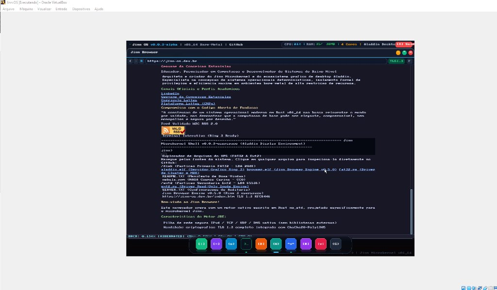
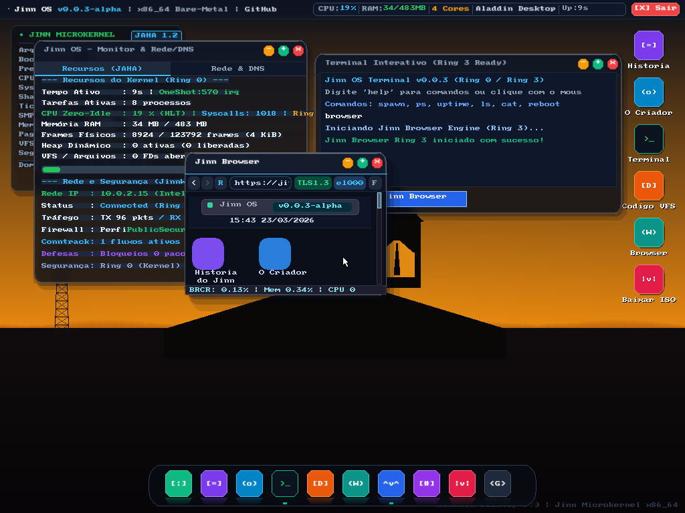
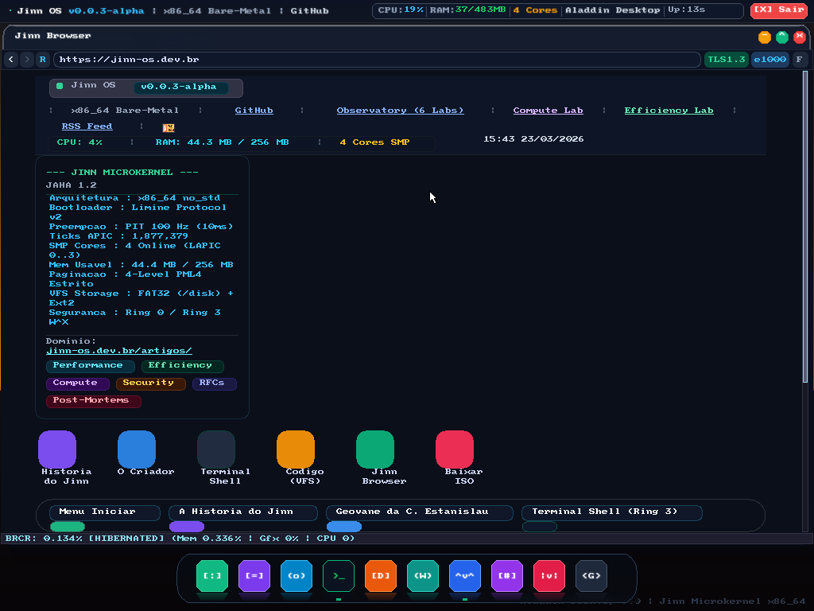
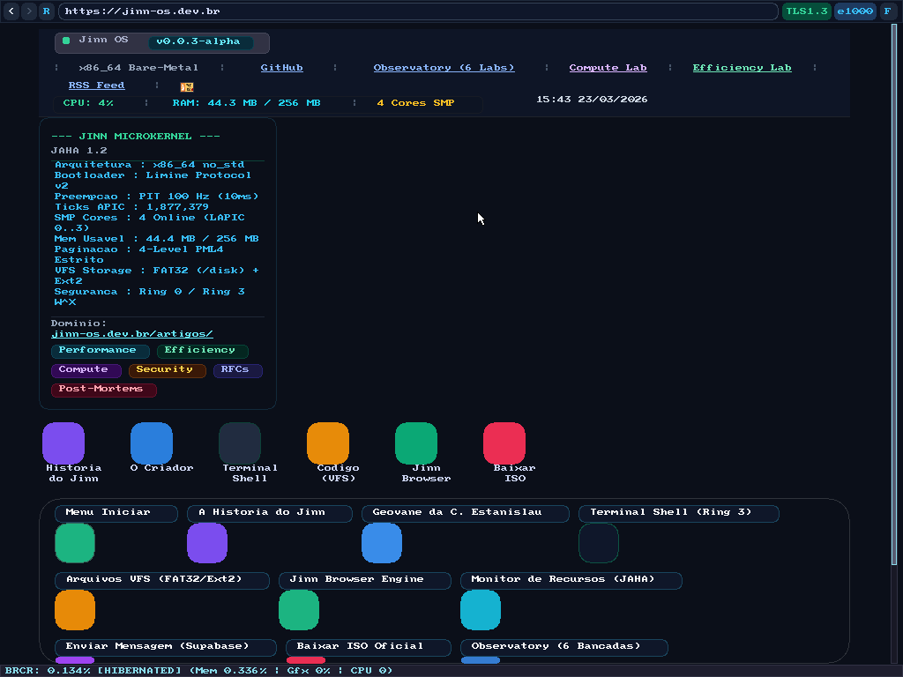
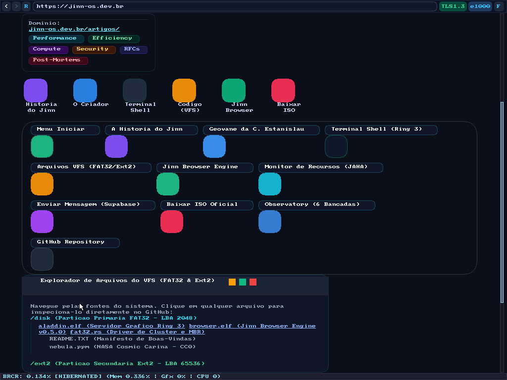

Motor Visual CSS Cards/Grid, Compositor Aladdin e Fluxo TCP no Jinn Browser
Fechando a evolução visual entre o microkernel Jinn OS, o compositor Aladdin Desktop e o Jinn Browser em #![no_std], esta entrega elimina colisões na barra superior do sistema, posiciona janelas maximizadas estritamente acima do Cairo-Dock, adiciona suporte nativo a grid-template-columns, renderização de <input>/<textarea> com placeholder/value, pílulas duplas de transporte e NIC (TLS1.3 + e1000/virtio via Syscall 88) e ajusta a janela receptora TCP para absorver rajadas TLS 1.3 de CDNs sem perdas.
1. Achados da Auditoria Visual e de Transporte
-
Colisão no Wingpanel do Aladdin (
Aladdin/src/desktop/wingpanel.rs): a cápsula de telemetria à direita usava largura fixa de460 pxemcap_x = screen_w - 472(552..1012em1024x768) enquanto o botão[X] Saircomeçava emexit_x = screen_w - 68(956..1016), sobrepondoAladdin DesktopeUp: XXssobre o botão vermelho. -
Sobreposição do Cairo-Dock em janelas maximizadas (
session.rs&wm/manager.rs): o Cairo-Dock ocupa alturaDOCK_HEIGHT = 62emdock_y = screen_h - 72(696 pxem768 px), mastoggle_maximizerecebiadock_h = 54, estendendo o rodapéBRCRaté705 pxpor trás do dock. -
Lacunas de layout e telemetria no Jinn Browser (
browser.rs&main.rs): ausência degrid-template-columns, colapso incompleto abaixo de760 px, separadores ASCII extensos (====/----) quebrados em sobras feias na linha seguinte, campos de formulário sem texto visível deplaceholder/valuee exibição de um único selo de status em vez da dupla transporte + adaptador de rede. -
Estouro de rajada TCP sobre anel RX da NIC
e1000: o controladore1000utilizaNUM_DESC = 32descritores RX (~46 KiBem hardware), porémTCP_DEFAULT_WINDOW = 65535permitia rajadas de64 KiBcontínuos em CDNs como Cloudflare (126+ KiB), ocasionando queda/reordenação no burst e falha pontual AEAD após63 KB.
2. Arquitetura Implementada (#![no_std], Zero-Idle & .bss)
Compositor Aladdin: Topbar & Cairo-Dock
right_capsule_boundseexit_btn_xunificados entrewingpanel.rsesession.rs, posicionandocap_xà esquerda deexit_x - 8e encadeando retornos dedraw_label_and_numsem offsets chumbados.snap_left,snap_rightetoggle_maximizecalibrados comWINGPANEL_HEIGHT(28 px) e folga deDOCK_HEIGHT + 12(74 px), encerrando a janela maximizada emy=685com11 pxlivres acima do dock emy=696.- Clamping de coordenadas Y em
create_client_windowesync_client_window_sizepreservando visibilidade do barramento inferior após restauração de tela cheia.
CSS Grid, Formulários & Contenção de Texto
parse_grid_template_columnsem regras CSS e atributosstyle="..."suportandorepeat(N, ...)e listas de trilhas, com empilhamento em 1 coluna para viewports< 760 pxe breakpointsmd:em760 px/lg:em960 px.- Fallback visual discreto exclusivo para elementos sem estilo CSS (
.card,.panel,.hero,.badge) preservando cores originais quandostyle.cssestá carregada. - Extração de
value=,placeholder=etype=em<input>/<textarea>sem ampliarDomNodeem.bss, além de unificação empush_wrapped_textcomis_ascii_rule_runpara truncar====/----em linha única.
Pílulas Duplas de Transporte & NIC (Syscall 88)
sync_browser_net_ifaceconsultasys_get_system_stats(SystemStatsUser.net_adapter) na inicialização e normaliza o driver ativo (e1000,virtio,pcnet,lo) paraBrowserSession.chrome_pills_geometryedraw_chrome_pillcompartilham o cálculo exato entrehandle_clickerenderpara exibir lado a lado o selo criptográfico (TLS1.3ouHTTP (Sem TLS)) e o adaptador de rede antes do botão[F].
Sintonia de Janela TCP para Anéis RX
- Ajuste de
TCP_DEFAULT_WINDOW(src/net/tcp.rs) elocal_win(src/net/socket.rs) para24576bytes (~16–17 frames Ethernet), mantendo o tráfego em voo confortavelmente abaixo dos32descritores RX do controladore1000. - Telemetria
EVENT_WINDOW_RESIZE_DONE upd=<code>no laço de eventos Ring 3 permitindo sincronização determinística em ensaios de redimensionamento.
3. Evidências Visuais Comparativas (VirtualBox → QEMU)

Aladdin Desktop sobre [X] Sair na barra superior, Cairo-Dock ocultando a barra BRCR da janela maximizada e ausência de separação visual em cartões e formulários.

300x180, QEMU): topbar Aladdin com folga limpa antes de [X] Sair, empilhamento responsivo 1-coluna em jinn-os.dev.br e pílulas duplas TLS1.3 + e1000 visíveis na barra de endereços.

1022x622, QEMU): borda inferior e barra BRCR: 0.134% [HIBERNATED] interrompidas acima do Cairo-Dock (11 px livres), com painel Conky HUD e pílulas completas.

F11 (1024x768): renderização completa da fachada de https://jinn-os.dev.br com cabeçalho de telemetria, card Conky HUD, badges de bancadas, atalhos do desktop e pílulas TLS1.3 + e1000.

F11): acionamento por clique (JsAction) revelando o card estilizado Explorador de Arquivos do VFS (FAT32 & Ext2) com botões de janela e links navegáveis.
4. Bateria Consolidada de Regressão E2E (QEMU)
-
test_x509_sites_e2e.py(14/14sites aprovados): carregamento bem-sucedido após o ajuste da janela TCP emgoogle.com,github.com,en.wikipedia.org,news.ycombinator.com,example.com,jinn-os.dev.br,frogfind.com,68k.news,pudim.com.br,www.kernel.org,www.rust-lang.org,www.cloudflare.com,www.mozilla.orgeg1.globo.com(114.022 Bdecifrados em G1 Globo e resposta completa Cloudflare sem erro AEAD). -
test_ciclo1_security_observability_e2e.py(10/10cenários): bloqueios X.509/SAN,CertificateVerify, redirect e subrecurso HTTP->HTTPS downgrade, seloHTTP (Sem TLS)lado a lado come1000, e fronteira medida via[DIAG-BENCH](Sys88 média8.9–9.6 μse Sys97 média13.1–15.6 μs). -
test_hot_routes_e2e.py: Fast-Path validado comARP=0 DNS=0em navegação subsequente e pós-reboot frio sobre FAT32, mantendo100.00%de ociosidade em HLT nos núcleos AP ociosos (cpu2/cpu3). -
test_jaha_12_integrity.py: reconciliação estrita de frames físicos comINVARIANT PASSED (0 bytes discrepancy).
5. Limitações Conhecidas
O motor gráfico Ring 3 ainda não rasteriza primitivas vetoriais <svg> nem posicionamento CSS absoluto flutuante com arraste (position: fixed sobreposto via JavaScript completo); por isso, ícones em SVG exibem suas caixas coloridas estilizadas e janelas do portal abrem em fluxo estruturado sem sobrepor a grade anterior. Além disso, os ensaios completos pós-patch foram executados sob emulação QEMU (e1000 e 4 vCPUs); a reprodução em VirtualBox e hardware bare-metal físico permanece aberta para verificação com parceiros.
Jinn Engineering Observatory • Semântica & Colaboração Aberta
Domínios Técnicos & Ecossistemas Relacionados
Badges clicáveis indexados por bancada, domínio de engenharia e organizações/padrões do Radar Expandido (Nível B contextual, sem endosso implícito):
Aplicabilidade: Indústria, Uso Doméstico e Servidores
Gateways industriais, coletores SCADA e frotas com links intermitentes via SharedRings SPSC (4096 B), HotRouteTable e diagnóstico de falha por estágio.
Navegação ágil com DNS 3 camadas (/disk/hosts → LRU → upstream) e fallback resiliente de conectividade.
Caminhos críticos IPC lock-free e observabilidade de pilha TCP/TLS 1.3 no_std com inspeção direta por syscalls.
Chamada Aberta para Pilotos (Indústria Local, Universidades & Setor Público Ético)
Convidamos integradores de automação industrial, laboratórios universitários de arquitetura/SO e instituições públicas eticamente responsáveis a reproduzirem estes experimentos em silício real (fechando lacunas emulador vs. hardware da Tabela B) ou propor estudos-piloto com Jinn OS, Aladdin e JHCS.
![[Valid RSS]](/valid-rss-rogers.png "Validate my RSS feed")